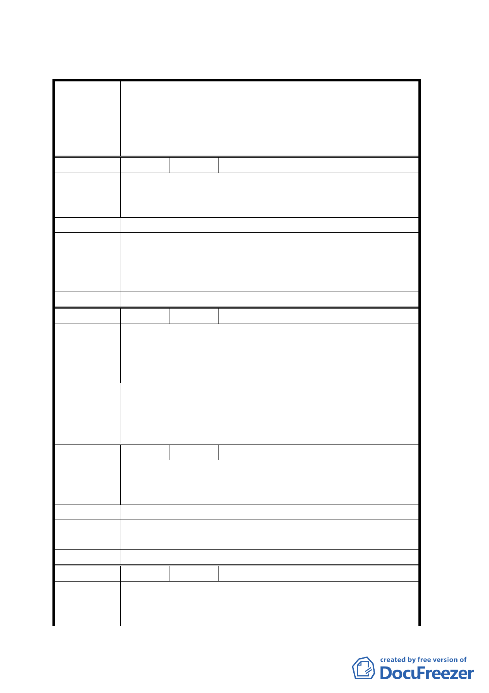

臺北市都市計畫委員會公民或團體所提意見綜理表
變更臺北市市民大道（新生北路至基隆路段）兩側第四之
一種住宅區、第四種住宅區、第三之二種住宅區、第三之
案 名 一種住宅區、第三種住宅區、道路用地為第三種商業區
（特）、第三種住宅區為公園用地暨劃設都市更新地區計畫
案
編 號 １ 陳情人 林銘文
建議位置：臺北市八德路三段 12 巷 61 號
陳 情 理 由 既全改為第三種商業區應增加建蔽率與容積率才有更新誘
因
建 議 辦 法 不管住三或住四一律以建蔽率 60％，容積率 400％
有關變更為第三種商業區（特）採原容積率之相關規定為
專案小組審 本市商業區通盤檢討之通則，本案已就放寬建蔽率、增加
查 結 論 各類獎勵及劃定都市更新地區作為誘因。建議依公展計畫
辦理。
委員會決議 同專案小組審查結論。
編 號 ２ 陳情人 張紹勳
建議位置：懷生段三小段 162、149 地號
陳情理由
一、本基地與北側計畫範圍內之街廓屬當年單一建照整體
開發案件。
二、為利未來整體開發，建議南側街廓一併納入計畫範圍。
建 議 辦 法 建議納入計畫範圍
專案小組審 八德路二段三十四巷六弄以南（大安區懷生段三小段 154 地號等）
查 結 論 同意納入本計畫範圍，並於都市更新時准予合併街廓開發方式處理。
委員會決議 同專案小組審查結論。
編 號 ３ 陳情人 林月姐
建議位置：大安區懷生段三小段 149-1 地號
陳 情 理 由 北側街廓與南側街廓同屬單一建照，為利整體社區開發建
議納入計畫
建 議 辦 法 建議納入計畫範圍
專案小組審 八德路二段三十四巷六弄以南（大安區懷生段三小段 154 地號等）
查 結 論 同意納入本計畫範圍，並於都市更新時准予合併街廓開發方式處理。
委員會決議 同專案小組審查結論。
編 號 ４ 陳情人 黑松股份有限公司
一、依據本案本公司所擁有土地 585、585-7、585-8、585-9、
陳情理由
585-10、585-11、585-12、585-13、585-14 等九筆地
號只納入緊鄰市民大道約五分之二土地變更為第三種
一三